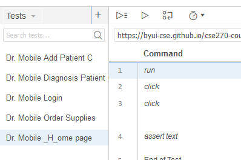

Lab 09 - Integration of Sensors
Overview
In this lab we will use Selenium Software IDE to record our test cases from last weeks assignment.
Assignment
Add the Selenium IDE plug in.
The Selenium IDE work for Firefox and for Chrome. For the sake of the lab, I will be giving directions for downloading Chrome’s extention. Goto Chromes web store and select Selenium IDE.
Add the Selenium IDE extension, by selecting Add to Chrome.
Agree to the permissions, by clicking Add Extension:
Reading information box
Open Selenium IDE Project
Save off the Dr. Mobile Selenium IDE Project File.
Click on the Selenium icon in the plug-ins
It will then bring up Selenium IDE.
Click “Open an existing project”, select the location of where you saved the file, and select the file, “DrMobileTests.side”. (Note: *.side, stands for Selenium IDE)
You should see, the following tests in the diagram.
Run Dr. Mobile Tests
Pre-Conditions: In the top-left corner, under Project: , verify that Tests is selected and not Test suites or Executing.
As part of this step you need to take screen shots of your IDE. Please open and save a document that you will submit as part of this lab.
- Run Dr. Mobile _H_ome page test, by clicking on the test, and clicking on the Run icon

The test should bring up Dr. Mobile Webpage, Login and show the _H_ome page. In the Log, you should see lines that says:
- 4.assertText on css=.toc-item:nth-child(1) > .tc-tiddlylink with value Functions OK
- 'Dr. Mobile _H_ome page' completed successfully
Save a screen shot of this test run to your document.
- Run the Add Patient C test. The test should Login, Add Patient C to the list of Patients, and verify by going to Diagnosis page. You should see the following in the Log:
- 15.assertText on css=.evenRow:nth-child(5) > td:nth-child(2) with value Broken Leg OK
- 'Dr. Mobile Add Patient C' completed successfully
Save a screen shot of this test run to your document.
- Run the Diagnosis Patient. The test should Login, Add Patient C, and Enter diagnosis vitals. You should see the following in the Log:
- 17.assertText on css=.evenRow:nth-child(1) > td:nth-child(2) with value 101 OK
- echo: Check for Heartbeat
- echo: Check for O2 Level
- echo: Check for Blood Pressure
- 'Dr. Mobile Diagnosis Patient C' completed successfully
Save a screen shot of this test run to your document.
Modify Dr. Mobile – Diagnosis Patient Test
You will notice in the last run of the Dr. Mobile Diagnosis Test, that there were three echo statements after the assertText and the before the ‘successfully’ statement. We are going to change those statement to ‘assert’ statement.
An assert statement is the same to a verify statement in our previous manual tests.
In on Line 18 of the Dr. Mobile Diagnosis Patient Commands, change the Command ‘echo’ to ‘assert text’. You can either pick it from the drop down menu or copy and paste it in. You need to update the target by using the select target in page button next to the Target’s textbox, and select the table cell that contain the Heartbeat or type in the following: “css=.evenRow:nth-child(2) > td:nth-child(2)”. For the value it should be 67.
Repeat the process on lines 19 and 20.
|
Line |
Command |
Target |
Value |
Temperature |
17 |
assert text |
css=.evenRow:nth-child(1) > td:nth-child(2) |
101 |
Heartbeat |
18 |
assert text |
css=.oddRow:nth-child(2) > td:nth-child(2) |
67 |
O2 Level |
19 |
assert text |
css=.evenRow:nth-child(3) > td:nth-child(2) |
95% |
Blood Pressure |
20 |
assert text |
css=.oddRow:nth-child(4) > td:nth-child(2) |
120/80 |
Run test again. Save a screen shot of this test run to your document.
Record ORDER Supplies Test.
For this test you will be recording steps using Selenium IDE.
You will clicking on Communicate tab, and then the Order Supplies tab. After that you will need to click on each of the checkbox widgets. Try it now. Notice that the status changes from Order to ‘Need to Order’
Now lets record the steps. From Selenium IDE window, click on the Dr. Mobile Order Supplies test. Run the test. You should see it Login and bring up the Home page.
Click on line 2, the line under line 1, blue.
Now click on the (Rec) button. The browser should come up with it indicating that Selenium is now recording.
Run through the previous steps:
- Click on the Communicate Tab
- Click on the OrderSupplies Tab
- Click on each of the items to order.
Click on the Selenium IDE and click the stop ([]) button.
Run the test.
Take a screen shot of the Selenium IDE app. Save a screen shot of this test run to your document.
Save the Dr. Mobile Project File. Close the IDE.
Submission
Submit the following::
- Document containing the screen shots.
- Saved Selenium IDE File.
Rubric
Use the following rubric to help understand the expectation.
|
Exceptional |
Good |
Acceptable |
Developing |
Missing |
Run Dr. Mobile tests 45% |
Evidence of running Diagnosis test |
Evidence of running Add Patient |
Evidence of running _H_ page |
Evidence of IDE installed |
No evidence |
Modify Diagnosis tests 25% |
Blood Pressure assert step was successful |
O2 Level assert step was successful |
Heartbeat assert step was successful |
Temperature assert step was successful |
No evidence of Modified Tests |
Run Automated tests 25% |
All items were successful |
Some of the items were successfully executed |
Screenshot of recording was made |
Attempt was made to record |
No recording found |
Professionalism |
The paper is easy to read and communicated. |
Properly cited, there are no grammar or spelling errors, and the writing style is "professional." |
Found an instance of a spelling error, grammar error, incomplete citation, overly verbose wording, poor formatting, or poor writing. |
A citation is missing where one is needed (plagiarism alert!). |
Gross spelling/grammar errors or other aspects of the writing that make the paper difficult to read. |